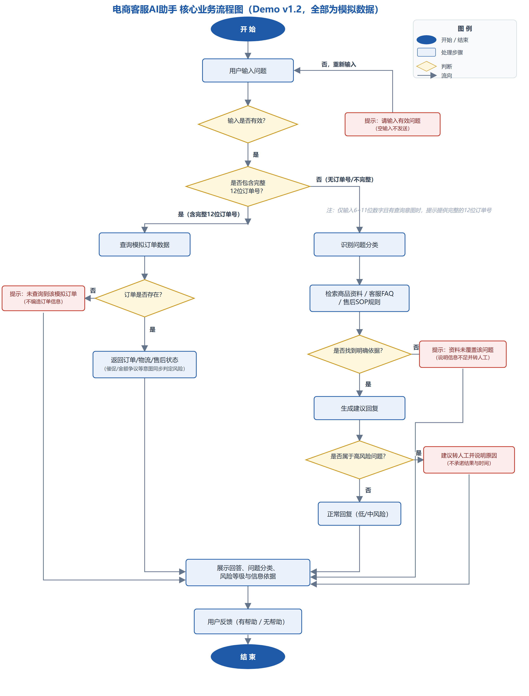
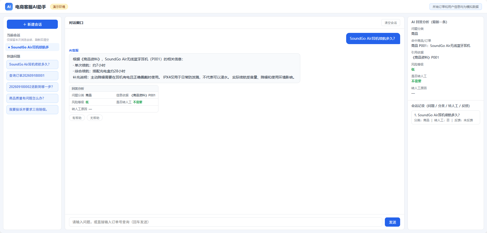
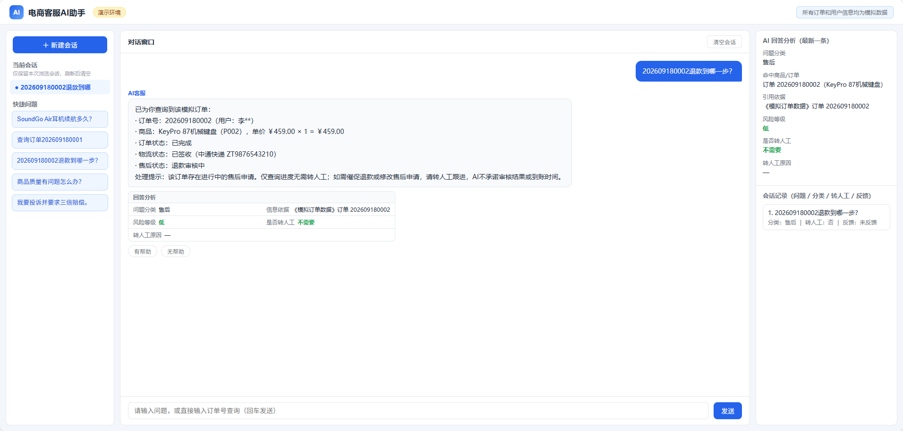
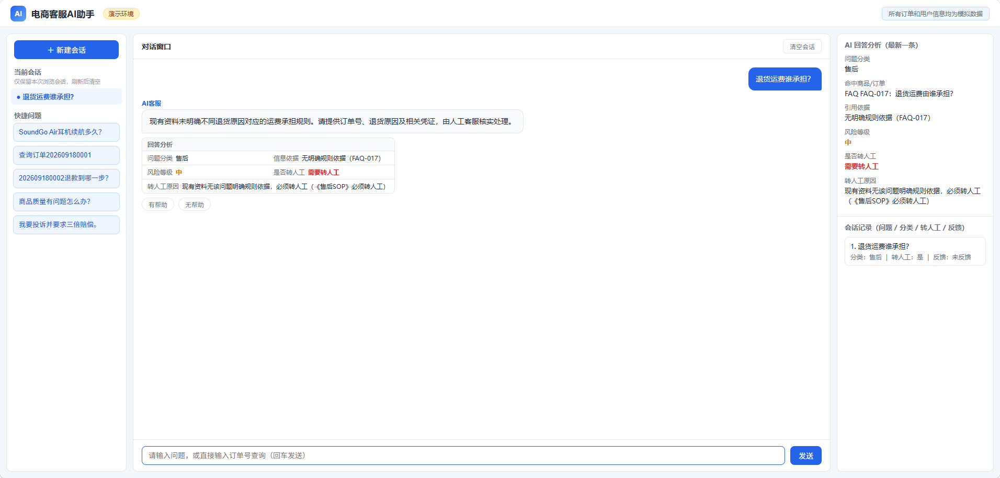
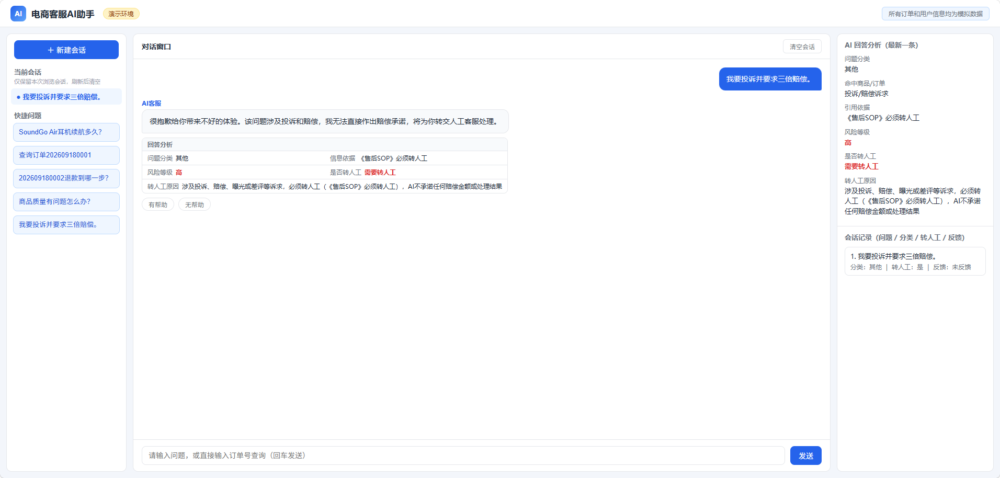
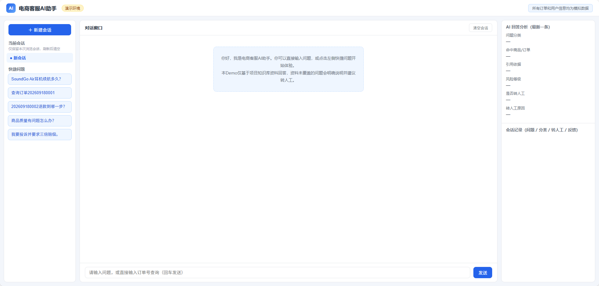

AI
个人作品集项目 · 能力验证 DEMO
电商客服AI助手
基于业务资料和规则检索的客服能力验证 Demo
我的角色
产品规划 · 知识整理 · Prompt设计 · 原型与测试
使用工具
WorkBuddy · Axure RP 11 · WPS
数据说明
全部为模拟数据，未接入真实系统
2026 · 求职作品集案例
用户问题与项目目标
01 / 问题定义
客服场景的四个痛点
01
重复回答率高
商品参数、物流、售后问题被反复询问，占用大量人工坐席时间
02
人工检索资料慢
客服需要在多份文档间翻找价格、参数与售后规则，响应慢
03
回答口径不一致
不同客服对同一规则的表述可能不同，容易引发二次投诉
04
高风险问题需及时升级
投诉、金额争议、赔偿诉求必须第一时间转人工，避免AI误承诺
产品目标
▸ 基于资料生成客服建议回复，并标注信息依据
▸ 自动识别问题分类（商品 / 订单支付 / 物流 / 售后 / 其他）
▸ 支持 3 个模拟订单的状态查询与售后进度展示
▸ 识别风险并判断是否转人工，收集用户反馈
非目标（当前版本不做）
不对接真实订单 / 支付 / 物流系统 · 不处理真实用户隐私数据 · 不自动批准退款或赔偿 · 不承诺到账或处理时间 · 不包含真实大模型 API 与 RAG
消费者
随时提问，获得有依据的回答
客服人员
参考建议回复，统一口径
客服主管 / 运营
关注风险问题与转人工质量
电商客服AI助手 · 个人作品集
02 / 07
产品方案与核心流程
02 / 方案设计

核心业务流程 · 七个环节
STEP 1
用户提问
STEP 2
输入有效性校验
STEP 3
订单号识别
STEP 4
问题分类
STEP 5
资料检索
STEP 6
生成建议回复
STEP 7
风险判断
STEP 8
回复或转人工
每条回答附用户反馈入口（有帮助 / 无帮助），闭环沉淀
四类知识源 · 回答的唯一依据
商品资料
5款商品的参数、价格、材质、保修
客服FAQ
20条标准问答，按5类问题组织
售后SOP
售后流程、七天无理由与转人工规则
模拟订单
3笔订单15字段，含数量与售后状态
有依据 → 回答并展示依据；无依据 → 明确告知「资料未覆盖」，绝不编造
电商客服AI助手 · 个人作品集
03 / 07
功能架构与关键规则
03 / 功能与规则
商品问答
5款商品参数/价格/保修逐项作答
FAQ问答
20条标准问答匹配，附依据来源
模拟订单查询
识别12位订单号，返回状态三要素
问题分类
商品/订单支付/物流/售后/其他
信息依据
每条回答标注资料出处
风险识别
独立维度：低/中/高三级
转人工判断
9类情形强制建议转人工
用户反馈
有帮助/无帮助，会话内记录
三条核心业务规则 · 贯穿全部回答
1
有依据才回答
回答内容全部来自商品资料、FAQ、售后SOP 与订单数据；资料未覆盖的问题明确说明「现有资料未覆盖」，AI 不编造政策、参数与承诺。
2
未知订单不编造
仅 3 个模拟订单号可查询；不存在的订单号一律提示「未查询到该模拟订单」，不完整订单号提示补全 12 位，绝不返回猜测信息。
3
高风险必须转人工
金额争议、重复扣款、投诉赔偿、隐私与他人订单请求：拒绝处理并转人工；仅查询退款进度不转人工，催促或质疑才升级。
电商客服AI助手 · 个人作品集
04 / 07
原型与可运行 Demo
04 / 原型与实现

商品问答 · 回答附资料依据

退款进度查询 · 展示售后状态

资料未覆盖 · 明确告知不编造

风险转人工 · 高风险提示与原因

空白会话 · 快捷问题与三栏布局
Axure RP 11
用于关键状态与路径展示（上图为 5 个典型状态）；
HTML/CSS/JavaScript 网页 Demo
可本地实际运行，每条回答同时展示问题分类、信息依据、风险等级与转人工判断。
电商客服AI助手 · 个人作品集
05 / 07
测试与迭代
05 / 质量验证
80%
→
100%
严格通过率
（25条正式用例 × 2轮）
两轮测试结果对比（条数）
轮次
通过
部分通过
不通过
第一轮
20
4
1
第二轮
25
0
0
边界声明：100% 仅代表现有 25 条预设测试用例全部通过，不代表覆盖所有真实用户表达。
第一轮发现 6 个问题 · 第二轮全部修复
1
口语化投诉表达漏识别
→
建立可维护风险关键词集合
2
多属性提问回答不完整
→
按属性逐项作答并标注未覆盖项
3
物流停滞判断不足
→
超24h未更新识别为物流/中风险/转人工
4
具体FAQ匹配优先级不足
→
专用条目优先于泛化条目
5
不完整订单号无提示
→
6~11位数字提示补全12位
6
金额争议话术过于通用
→
金额争议专用回复，要求人工核对
第二轮回归：25/25 通过，P0/P1/P2 遗留均为 0；空输入用例经浏览器实测复核。
电商客服AI助手 · 个人作品集
06 / 07
项目结果与复盘
06 / 结果与沉淀
实际交付物
1
份需求分析
产品与用户需求文档
1
份 PRD（3~5页）
V1.0，12章节正式文档
1
张业务流程图
标准图形，嵌入PRD
5
个Axure关键页面状态
覆盖典型交互路径
1
个可运行网页Demo
HTML/CSS/JS 本地运行
25
条正式测试用例
15字段记录，两轮执行
2
轮测试与迭代记录
问题清单+回归记录
复盘 · 关键经验
✓
先整理知识与回答边界，再制作 Demo —— 数据层质量决定回答质量
✓
问题分类与风险判断拆成两个独立维度，避免「分类即定风险」的误判
✓
测试不只验证答案，还验证依据出处与转人工判断的正确性
✓
规则匹配能快速验证业务流程，但语义泛化能力有限，需大模型补充
后续规划
接入 DeepSeek 等大模型 API
向量知识库 + RAG
多轮上下文对话
接入真实订单系统
运营效果看板
当前版本为规则匹配 Demo（模拟数据），用于验证业务流程与回答边界，为接入大模型 API 做准备。
电商客服AI助手 · 个人作品集
07 / 07